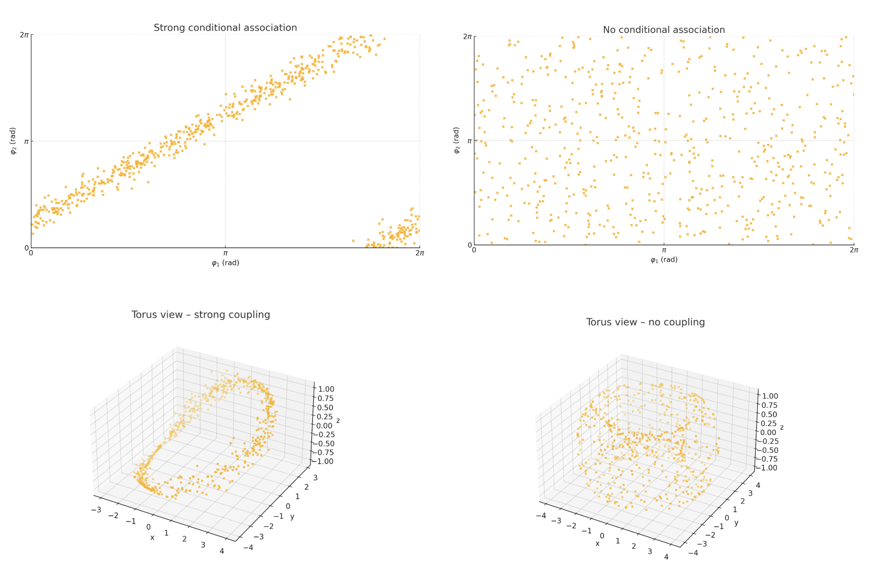
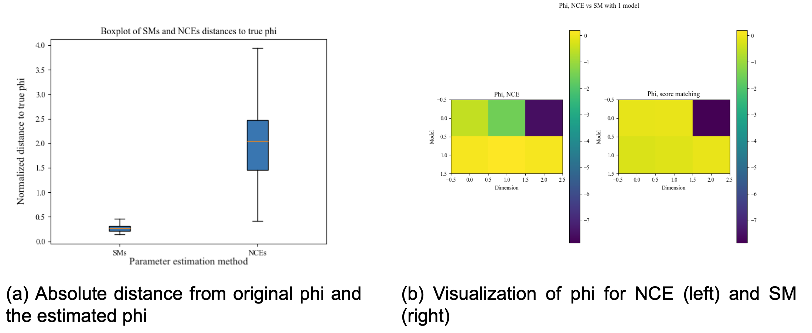
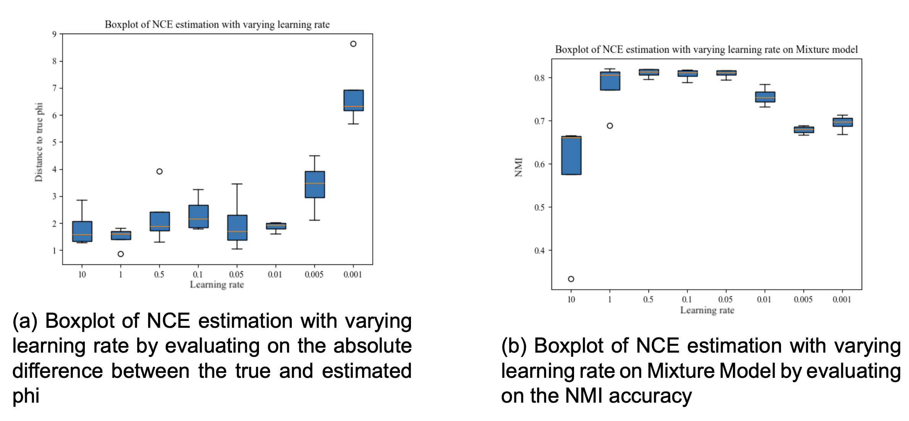
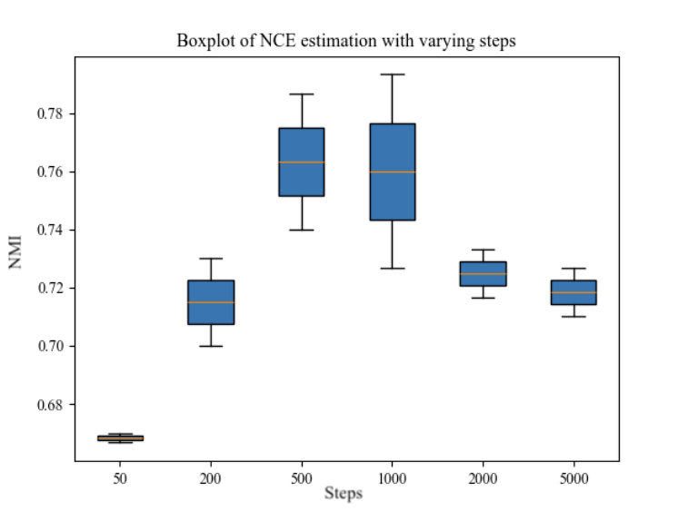
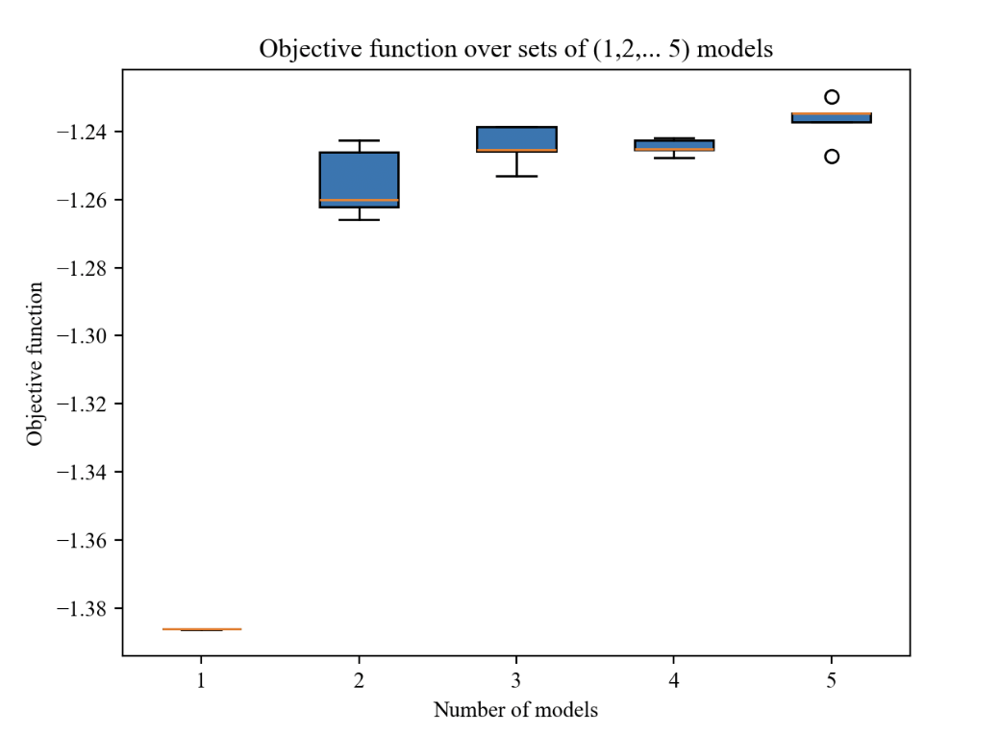
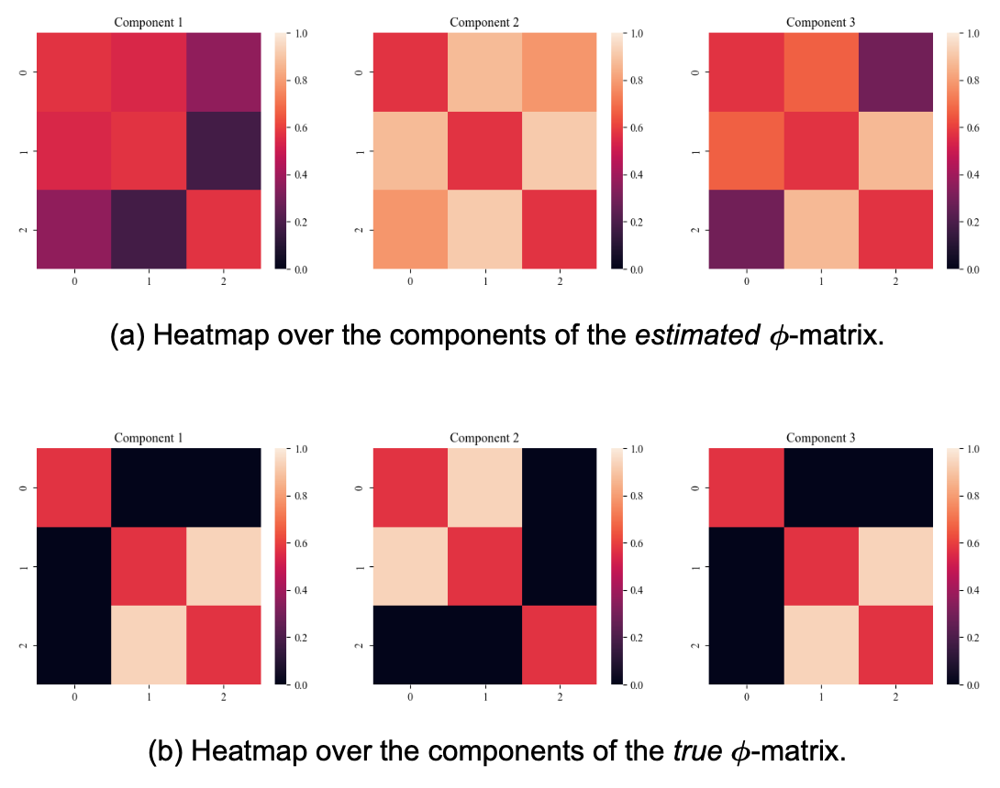
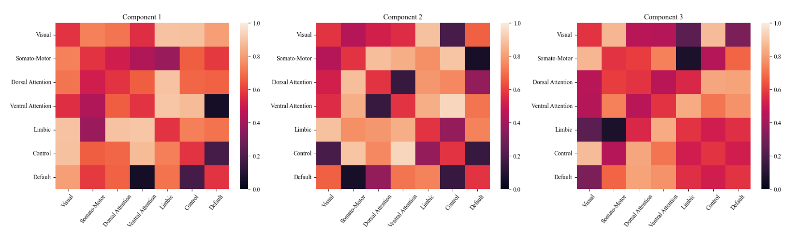
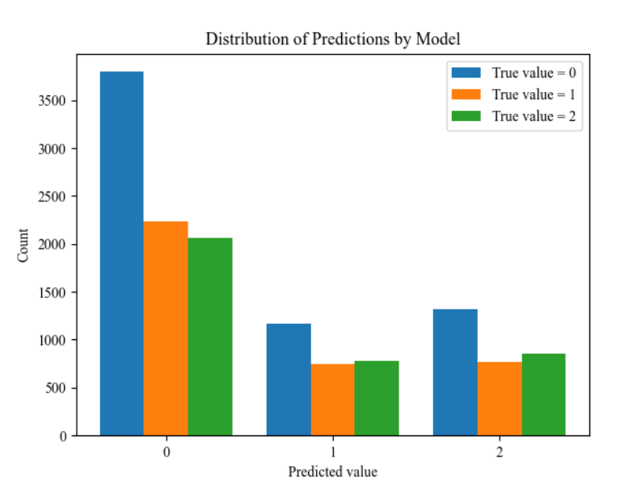
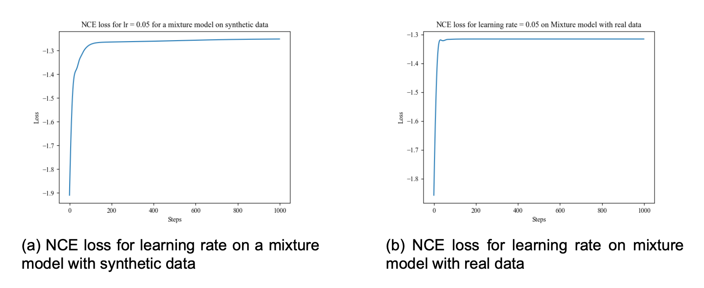

May. 16 - 2024
Using Torus Graphs to Uncover Neural Patterns
Software
Humans are funny. We (our brain) have a strange, underlying motivation to try to understand ourselves, and for a long time, many parts of it have remained a mystery. I wanted to jump on the train, especially where it intersects with AI in some form.
After jumping around in the litterature for a while, it seems one of the larger goals of neuroscience is to be able to artifically the model brain as accurately as possible (as attempted in Jascha Achterberg et al, 2023), which requires us to understand exactly which parts of the brain is responsible for which actions.
1. Oscillating Signals from Multiple Brain Areas?
A possibly unexplored area of the literature could be uncovering neural phase-locking patterns; how different parts of the brain cooperate most with each other. This would help us potentially group them into segments and ...
This is a fairly complex task, so let's take it one step at a time. We need to take in multiple brain signals at once, the more the better. We should be able to take in at least 20 and do so effectively. This puts a constraint on the models we can use.
Next up, let's look at each signal. We can model them as circular random variables, meaning they are represented as phase values (radians) and are (quasi)-periodic (like a sine wave, quasi because they change amplitude and period length over time). Imagine we only have two brain areas to work with. The product between them would be a circle (x = signal1, y = signal2). The "roundness" of this circle and consistency will give an estimate of the conditional association between these two signals. Note that this isn't the perfect explanation of the math that makes it work, but I think it's a good enough intuitive explaination to understand why it works.
If the two signals have a strong conditional association, the phase angles will be close to each other most of the time. This will not only produce a nice scatterplot, but also a nice torus (donut-shaped in 3D space), and the opposite for no association. We can simulate this using a vonmises-distribution (not relevant here, just often used for circular distributions). We can then plot the phase angles first on a scatter, then as a Torus. When plotting two circles, we need 3 dimensions to visualize properly.
Take some time to look through the plot. Most of what I said so far should make much more sense after having a look at these plots. The main takeaway here is that a strong conditional association will produce a nice torus (donut-shape), when no association produces an "edgy" ball shape. From this, we should intuitively have the idea that Torus Graphs are good for estimating the conditional association between circular random variables and therefore for brain signals based on their fit to the data.
Puh. I hope I didn't lose you there. Long start. Let's jump to the actual new stuff here.
2. Single Torus Graph = Bad. Many = Great fit?
One idea would be to use a mixture model, multiple models supporting each other, which could help them fit a bit better. This idea is fairly simple. Instead of taking the output of a single model, the final output is the average output across multiple models.
Let's jump over some theory. If this isn't what you are here for, jump to the section 3. You should be able to understand the method, results and discussion regardless.
2.1 Theory and some math
Torus Graphs
Picture goes here...
Mixture Model
Picture goes here...
Parameter Estimation
Picture goes here...
Score Matching
Picture goes here...
Noise Contrastive Estimation
Picture goes here...
Evaluation: NMI and Phi
Picture goes here...
3. But how to test if it actually works?
Testing these models is actually much harder than expected. We have two issues:
- Real data is expensive and hard to get. Researchers and companies have some, but most is kept closed.
- The best way to model the brain is the one we use to fit. We risk artifically creating data that fits far too well, as both the sampling and fitted model are the same.
When trying to create synthetic data, sampling from the model we use for fitting could be okay, if the noise we use is right. We have a few requirements for such a noise distribution:
- We need a covariance measure in the distribution
- It has to be tractable
- It has to produce periodic signals
I could not seem to find any papers specifically working on such a distribution, and this seems like a rather large endeavour to try to come up with, so for now we will copy one of the approaches from Klein et al. Visit the Klein et al paper for a complete overview of how this is done or have a look in the code. We use a vonmises-distribution to randomize the drawings from a torus graph and use that as our synthetic data. This is not perfect, but should at least give us an indication of whether the code and model works as expected.
3.1 Real Data
Of course we need to test on some real data. As stated previously, it is limited what is open to the public here. 'Simultaneous EEG and fMRI signals during sleep from humans' available on OpenNeuro and described in this paper from 2023. The dataset consists of 20 minutes of awakening coverage and several 15-minute segments of sleep coverage with continuous scanning for each of the 33 individuals represented in this dataset. The data is of high dimensionality and to give our model a chance at some more simple data first, we use a brain atlas to group the signals into 7 larger group nodes each with 13728 observations.
4. Works, but room for improvement
Lets have a look at the results. All results should be fairly easy to reproduce by visiting the github repo. The results on the synthetic data are decent. Not so much on real data. For some unknown reason, the mixture model has a very hard time fitting.
The most probable issue is the estimation methods not performing well. This is indicated not only by the poor results on the real data, but heavily supported by the bad fit on synthetic data. As the research in the area is limited, I have not been able to find any papers describing other methods. For this reason, this endeavour ends here as we seem stuck with how to progress Torus Graph Mixture Models. We have not proven that this is the root cause, and there might be other, more significant causes that explain the poor performance.
4.1 Parameter Estimation Methods
We will first explore the performance of Score Matching (SM) vs Noise Contrative Estimation (NCE) on a single torus graph as explained in the theory section.
It is rather obvious that NCE performs not only more poorly, but is way more unstable when estimating the ϕ-matrix. This is supported by running a Wilcoxon signed-rank test (p-value: 0.00196). As NCE is our only option going forward with mixture models, we have to use the worse estimation method here. A future opportunity would be to use the idea of Score Matching to perform parameter estimation on mixture models.
4.2 NCE Parameter Tuning
NCE has several parameters available for tuning. Previous use of NCE suggests it is a fairly stable method, but let's make sure this too applies for our usecase.
The lower the distance to true ϕ, the better. We too see that the method is fairly staple. Multiple learning rates perform equally well, with values more extreme than 0.001 starting to perform worse. When calculating the NMI scores for each option, 0.05 gets the lowest value, closely followed by 1, 0.5 and 0.1. Nevertheless, we use 0.05 going forward.
One of the other variables available for tuning is the number of steps in the iterative optimization process in NCE.
500 and 1000 steps is the best option with both less and more steps having a tendency to decrease the performance of the mixture model. The fact that more steps can decrease the performance is quite interesting, and I'm not really sure why this happens. Sure, the model can overfit, but the evaluation NMI metric is based on the overall fit of the model on the training data, so it's this behaviour is quite strange. This might be one of the reason why the overall performance is bad, and something that could too be investigated later.
4.3 Number of fitting components
Next we will look at how the number of components (torus graphs / models) in a mixture model greatly affects the performance. When creating synthetic data the way we are doing, you need to choose how many models to draw from. In our case we choose 3, simply just to make it as easy as possible to analyze with not too much complexity. We then try to fit various mixture models with different number of components to that data:
In our case, more models does not reduce performance, but you get the best performance/speed when matching the natural distribution of the data you're to fit to. Duuuuuh, that might seem like an obvious and trivial conclusion, and partly it is. When fitting to data, where we don't know the components (i.e real data), one could simply try with a few different number of models, and then quickly get an idea of what the true number of components of the data is.
This conclusion is quite logical, and we would also expect the performance to be best at the exact point where the components and models of the mixture model align. This isn't currently the case, and this might be an incorrect hypothesis, or something else is wrong with the implementation or learning process, as we will look a bit into later.
The reason it is logical is this: Imagine you draw randomly from 3 different simple linear models. You could use a large model (nn) to brute-force the method, but in our case such models do not perform super well yet. So we could also try to make a mixture model of linear models that can fit to the data. Here it should be obvious that you should be able to get close to 100% with exactly 3 models as each of them can fit to each of the original linear models we sampled from. Less would probably make it really hard to fit, and more could maybe fit decently, but it would be harder, especially once you go up in dimensionality. So this is the logic behind the hypothesis, which we partly validated.
When fitting a mixture model of 3 components to synthetic data sampled from 3 models, we can compare the true ϕ-matrices of torus graphs we draw from to the ones we estimated in each of our components. The true component 1 and 3 look alike, but are different in that they have different signs. Ignored Indexing as it is irrelevant, the estimated ϕ values are decent (est. 2 -> true 1, est. 1 -> true 2 & est. 3 -> true 3). Again, we would expect this to be rather perfect, as this is a fairly simple task. This suggests that NCE might not be the best method to do the parameter estimation, or that we otherwise have to optimize it somehow. This is not something I will pursue here, but it should be remembered going forward.
Important note: Number of signal is not number of components. You can have more signals, but less underlying models representing the data.
4.4 Performance on real data
In our case, we use a brain atlas to convert the signals into 7 larger groups. We use a mixture model of 3 components to fit to the data. We are analyzing 3 different sleep cycles, and for this reason 3 is chosen. The main idea here is that there might potentially be other sub-stages that can be discovered by increasing the number of components, but this is not something we will directly pursue as the fit for 3 components is rather poor to begin with.
The output we are interested in are the ϕ-matrices. They give us the relationship between each brain group for each model. In a perfect world each model represents a sleep stage. On the positive the matrices are fairly different and have extreme values. This shows that some learning is done and that each model learns something different. On the negative side, the performance is poor. To illustrate this, we can simply plot the real sleep stage with the predicted one from the model:
A majority vote classifier baseline model performs only slighty worse than our trained mixture model. Bad! The difference between the distributions for each result is only slighty different. The model has an extremely hard time fitting to the data. As discussed previously this could be due to the estimation method, NCE, not being good enough. To investigate a bit more, we can look at the loss curves for both the synthetic data and real data run.
A few things to notice here. Acheving a minimum loss of ~1.26 is not great. For the synthetic data, we see continous improvement when running the estimation method, which is positive. For the real data, the model seems unable to fit at all. After 60 steps we achieve the minimum loss and cannot improve from there. Even with different learning rates, we don't get any improvement whatsoever.
5. Takeaways
Here is a quick wrap up of the main takeaways from this article:
- Extending Torus Graphs to a Torus Graph Mixture Model should in theory help fit the model better to data and have the potential to uncover new sub-stages in various domains in neuroscience.
- Our results show that the mixture model has extremely poor performance even on simple data. The model can fit to synthetic data, but here it also performs far worse than expected
- The main issue is likely the estimation method. Score Matching performs way better for a single Torus Graph, but Noise Contrastive Estimation is the only way to currently estimate the parameters in a mixture model.
- All our results can easily be reproduced by following the readme in our GitHub Repo
Acknowledgements
This project was made possible by the collaboration with the people seen in the GitHub Repo Contribution list. They deserve as much credit as me, but cannot be held accountable for any of the statements in this article.